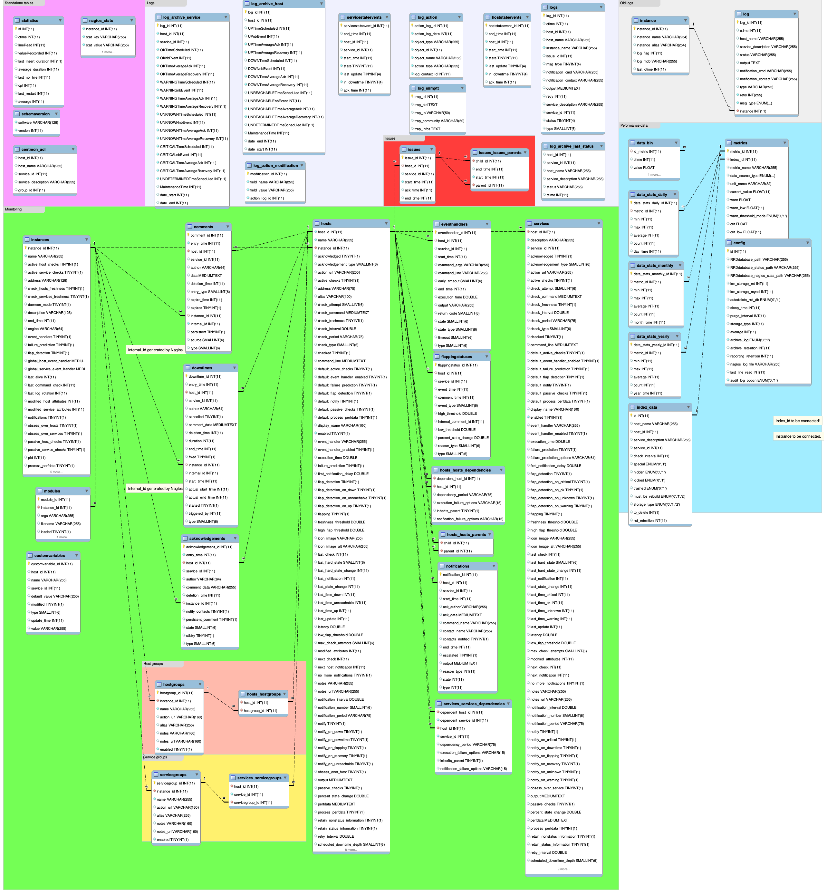

Performance¶
This is a guide on improving Centreon’s performance
Databases¶
The database server is one of the central components of Centreon. Its performance has a direct impact on the end user application’s speed. Centreon uses two or three databases depending on your monitoring broker:
centreon– Storing metadatacentreon_storage– Real-time monitoring and historycentreon_status– Real-time monitoring forndo2db
The database centreon_status is installed even if you don’t use ndo2db.
Indexes¶
Databases use indexes to speed up queries. In case indexes are missing queries are executed slower.
Synchronizing indexes¶
Starting with Centreon 2.4.0 for each release, index information files are
generated. They are found in data folder usually located next to the
bin or www folders. They are JSON files and there is one for each database:
centreonIndexes.json– Indexes forcentreondatabasecentreonStorageIndexes.json– Indexes forcentreon_storagedatabasecentreonStatusIndexes.json– Indexes forcentreon_statusdatabase
Check if your database is desynchronized:
$ cd CENTREONBINDIR
$ ./import-mysql-indexes -d centreon -i ../data/centreonIndexes.json
If any differences are detected you can synchronize your database. The process usually takes several minutes BUT if your database contains a lot of data and no index exists the process may take up to 2 hours. Make sure you have enough free space on the disk because indexes may require a lot of space:
$ ./import-mysql-indexes -d centreon -i ../data/centreonIndexes.json -s
Note
Indexes used by foreign keys cannot be synchronized.
-s or --sync options should be used in order to alter the
database. If you need to specify the username and/or password you can use -u and
-p options respectively.
InnoDB optimizations¶
This section is not documented yet.
Databases schema¶
Centreon database schema can be view here :

Centreon storage database schema can be view here :
RRDCacheD¶
RRDCacheD is a process to reduce disk I/O during the update of performance’s graphs and status’ graphs. The RRDCacheD process is loaded by the Centreon Broker module and mutualise I/O disques instead of recording one by one the data from the collect.
Installation¶
The RRDCacheD process is available in rrdtool package and already installed on your server.
Configuration¶
Main settings¶
Edit the /etc/sysconfig/rrdcached file and complete informaiton:
# Settings for rrdcached
OPTIONS="-m 664 -l unix:/var/rrdtool/rrdcached/rrdcached.sock -s rrdcached -b /var/rrdtool/rrdcached -w 3600 -z 3600 -f 7200"
RRDC_USER=rrdcach
Note
The order of setting is pretty important. If -m 664 is define before -l unix:/var/rrdtool/rrdcached/rrdcached.sock option then rights will be inccorrect on socket.
Options are following one:
| Option | Description |
|---|---|
| -w | Data are written every x seconds on disk (3600s in example reopresent 1h) |
| -z | Should be less than -w option. RRDCacheD uses a range value from [0:-z] to do not write in RRDs in same time. |
| -f | Timeout in cache before write data to disk. |
Note
Please modify values with you needs.
Groups configuration¶
Create groups using commands:
# usermod -a -g rrdcached centreon-broker
# usermod -a -g rrdcached apache
# usermod -a -g centreon rrdcached
# usermod -a -g centreon-broker rrdcached
Restart Apache process:
# /etc/init.d/httpd restart
Start RRDCacheD processus:
# /etc/init.d/rrdcached start
Centreon web configuration¶
Go to Administration -> Options -> RRDTool menu, enable processus and set unix socket path:

Warning
Instread of configuration was made into Administration you need to generate and export configuration of central server and restart cbd process to apply changes.

Centreon web interface¶
RRDCacheD don’t update performence’s graphs in real time. If a blanc range aapear on right of performence’s graphs it means that cache are not yet written to disk.
Warning
If the RRDCacheD process crash (in theory because it’s a stable process) data will be lost! It is not possible to get data unless rebuild all graphs from Centreon web.